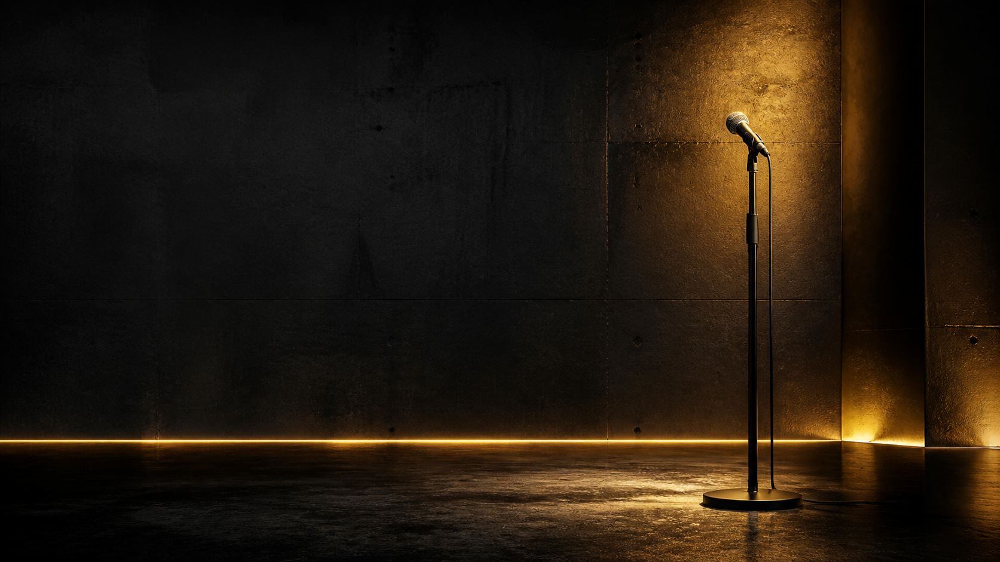
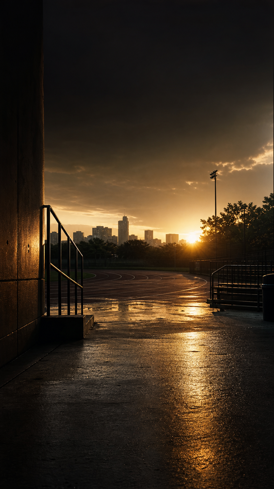

Build From Pressure
Motivation | Concrete Conversations | Leadership | Athlete Mindset
YouTube page and launch content
A complete original content package for the Concrete Motivation YouTube page, built for athletes, fathers, leaders, students, teams, and people rebuilding under pressure.

Channel identity
Welcome to Concrete Motivation with Jaytee Miller.
This channel is for athletes, fathers, young men, students, leaders, teams, coaches, and people rebuilding after setbacks. Here, pressure is not treated like proof that you are finished. Pressure is treated like the place where discipline, faith, leadership, family responsibility, and purpose get built.
Expect original motivational messages, Concrete Conversations, athlete mindset lessons, fatherhood and legacy content, leadership principles, and practical challenges you can use the same day.
This is not empty hype. This is for people carrying real weight and still choosing execution.
Motivation | Concrete Conversations | Leadership | Athlete Mindset
Helps athletes, fathers, leaders, and people rebuilding under pressure turn adversity into discipline and action.
Subscribe if you are building from pressure, leading with purpose, and moving with discipline.
Trailer script
There are people who look fine on the outside and still carry pressure nobody sees.
Athletes carrying a loss. Fathers carrying responsibility. Young men trying to find direction. Leaders showing up while life is heavy. People rebuilding from chapters they did not ask for.
Concrete Motivation exists for that person.
Here, we do not turn pain into excuses. We turn it into instruction. We do not wait for motivation to be loud. We build discipline when nobody is clapping.
This channel is about resilience, discipline, faith, leadership, family responsibility, and overcoming adversity.
Subscribe to Concrete Motivation if you are ready to build from pressure, lead with purpose, and move with discipline.
Launch plan
If you are carrying pressure nobody sees, this channel was built for you.
Pressure is not proof that you are finished. It may be where purpose starts getting built.
If you only move when people notice, pressure will expose the standard.
You rebuild life one kept promise at a time.
When people depend on you, discipline becomes responsibility.
The scoreboard can tell you what happened, not who you are becoming.
Readiness is not always a feeling. Sometimes it is a decision.
Leadership is proven when people still need you while you carry weight.
Faith does not remove the work. Faith gives the work direction.
Legacy is what your habits prove.
Comfort teaches convenience. Pressure teaches truth.
Do not let the thing that hurt you become the thing that hardens you.
Original dialogue
Pressure is not your permission to quit. It is your invitation to build different. Today, choose one promise you can keep before the day ends. Not ten. One. Then keep it.
The hard season exposed something. It exposed your habits. It exposed your circle. It exposed what you do when nobody is clapping. Do not waste the exposure.
Background images
